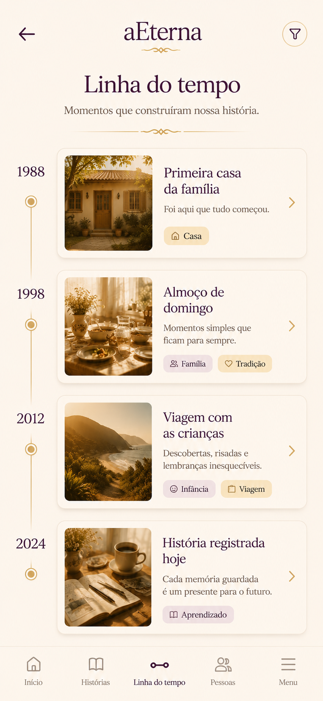
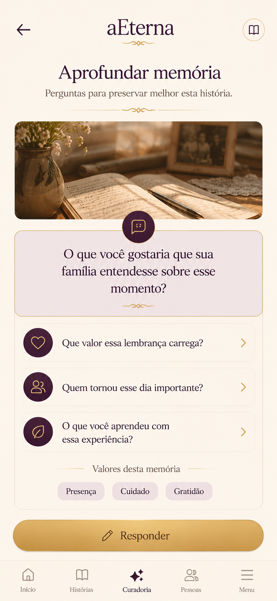
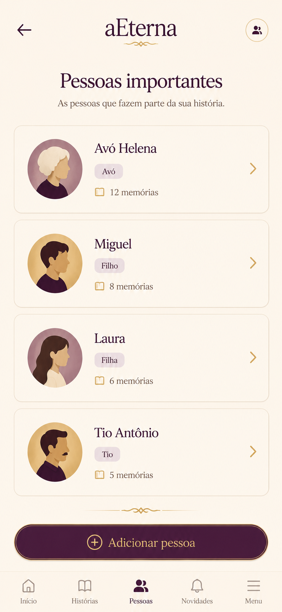

Primeira bicicleta
"Você caiu três vezes. Na quarta, olhou para mim e disse: 'Agora eu consigo sozinho.' Foi ali que eu entendi que crescer também é aprender a soltar a mão."
Ler esta históriaA aEterna transforma fotos, vídeos e lembranças em histórias vivas — construídas pela família, preservadas com contexto e continuadas ao longo das gerações.
"Você caiu três vezes. Na quarta, olhou para mim e disse: 'Agora eu consigo sozinho.' Foi ali que eu entendi que crescer também é aprender a soltar a mão."
Ler esta históriaHoje produzimos milhares de fotos por ano. Registramos o que aconteceu. Mas quase nunca registramos o que aquilo significou: quem estava presente, o que estávamos sentindo, o que aprendemos, o que aquela pessoa diria se pudesse falar com a gente daqui a vinte anos.
Quando alguém parte, normalmente ficam as imagens. O resto se perde — em conversas que não aconteceram, em perguntas que nunca foram feitas, em histórias que ninguém teve tempo de ouvir.
Não é por falta de memória. É por falta de estrutura para registrar — e de tempo para perguntar.
"Ninguém esquece a foto. Mas quase todo mundo esquece a história."
O registro mostra o que aconteceu. Raramente mostra o porquê.
"O vídeo do aniversário continua existindo. Mas quem lembrará da conversa que aconteceu cinco minutos antes?"
O momento público é preservado. O momento real, quase nunca.
"Sabemos onde a foto foi tirada. Mas raramente registramos por que aquele dia foi tão importante."
O lugar fica na legenda. O significado fica na cabeça de quem viveu.
"Hoje conseguimos guardar arquivos. Ainda estamos aprendendo a guardar significado."
Você tira uma foto hoje. O que vai acontecer com ela no futuro depende de uma escolha pequena agora.
Uma foto do aniversário do seu filho, com um texto dizendo o que estava acontecendo, quem estava ali, por que aquele dia foi tão importante.
Mas junto dela existe uma história escrita por você. Ele não vai ver só uma imagem. Ele vai entender quem estava ali, o que riam, por que aquele dia importou.
Esse é o tipo de coisa que não cabe em uma legenda e que quase nunca cabe em uma conversa. Mas cabe em uma história bem registrada.
A aEterna é uma plataforma integrada para preservar o patrimônio invisível de uma família: histórias, pessoas, relações, fotos, vídeos, aprendizados, datas, mensagens e tudo o que normalmente se perde com o tempo.
Você não precisa usar tudo de uma vez. Pode começar por uma história, e ir descobrindo o restante à medida que a sua família cresce junto com a plataforma.
"Cada família possui um patrimônio invisível. A aEterna existe para torná-lo visível."
Nem sempre os momentos mais importantes são os maiores. Às vezes, são os que cabem em uma frase, em um gesto ou em uma tradição que ninguém lembra quem começou.
Quatro passos simples para transformar uma lembrança em uma história que a sua família vai conseguir entender daqui a vinte anos.
Adicione uma foto, uma data, um título e conte o que aconteceu com suas próprias palavras. Pode ser uma viagem, um almoço em família, uma conversa que marcou você.
Quem estava presente? O que vocês estavam sentindo? O que aquilo ensinou? A aEterna ajuda você a transformar uma lembrança solta em uma narrativa com significado.
Relacione cada história a quem participou dela — filhos, pais, avós, amigos. As memórias ganham rosto e a família vai aparecer nas histórias, não só você.
As histórias vão se organizando em uma linha do tempo da sua família — clara, visual, fácil de revisitar e de compartilhar com quem você quiser.
As histórias vão se encaixando em uma linha que atravessa os anos — fotos de infância, casamentos, viagens, nascimentos, mudanças, conquistas e memórias do dia a dia.

O Curador de Histórias é um guia silencioso dentro da plataforma. Ele faz as perguntas certas para ajudar você a transformar uma lembrança solta em uma história com pessoas, contexto, datas e aprendizados.
Você não precisa escrever um texto longo. Você responde, ele estrutura — para que a história fique clara para quem for ler daqui a anos.

Na aEterna, uma foto ou um vídeo nunca fica solto. Ele entra em uma história com pessoas, contexto, datas e aprendizado.
Uma foto antiga da família reunida.
Por si só, ela mostra quem estava ali — mas não conta o que estava acontecendo.
Quem estava ali: avó, três filhos, dois netos.
Onde: casa nova da família, no interior.
O que estava acontecendo: primeira ceia depois da mudança.
O que isso significou: recomeço.
Um vídeo curto do avô falando sobre a vida dele.
Por si só, ele é um arquivo — sem rosto, sem nome, sem data.
Pessoa: avô Antônio.
Data: 14 de julho de 1998.
Contexto: entrevista gravada pelos netos antes da viagem.
Significado: a única vez em que ele falou sobre a infância no campo.
A foto continua sendo a foto. Mas agora ela tem rosto, nome, data e o que significou. É uma história que alguém da sua família vai poder ler daqui a vinte anos.
A aEterna não é uma plataforma em que só você escreve. As histórias podem crescer com a contribuição de quem viveu os mesmos momentos de um jeito diferente — filhos, irmãos, pais, avós, amigos.
Cada pessoa pode acrescentar fotos, vídeos e suas próprias versões daquela lembrança. Você continua sendo o autor da sua história, mas ela deixa de ser uma história só sua.
Você começa a história do Natal de 1998 com uma foto antiga e a frase: "Era a primeira vez que reunimos todo mundo na casa nova."
Sua irmã acrescenta uma fotografia da ceia que você nem lembrava que existia, e um detalhe sobre a torta que ninguém mais sabe a receita.
Seu pai lembra de um detalhe: foi o ano em que ele mais sentiu que a família estava finalmente reunida.
Seu filho, anos depois, lê aquela história inteira e descobre que o Natal de 1998 teve um significado que ninguém tinha contado para ele.
Uma história quase nunca está pronta quando você termina de escrevê-la. Ela termina de crescer quando alguém da sua família acrescenta a peça que faltava.

Cadastre cada pessoa que aparece nas suas histórias — com parentesco, datas especiais e o tipo de acesso. As pessoas deixam de ser apenas rostos em fotos e passam a fazer parte ativa da sua linha do tempo.
Mãe
Aniversário em 12/03Pai
Aniversário em 04/08Filha
Aniversário em 21/11Irmão
Aniversário em 30/06Avó
In memoriamAmigo
Aniversário em 17/02Prima
Aniversário em 09/09Uma nova pessoa
Quando quiserCada funcionalidade existe para cumprir um único propósito: ajudar a sua família a preservar o que normalmente se perde com o tempo.
O seu espaço principal de histórias. Cada memória registrada com título, data, pessoas, contexto e aprendizado.
Um guia que faz perguntas para ajudar você a transformar lembranças em histórias organizadas, com estrutura e significado.
Quando alguém quer conhecer a sua história, ele responde perguntas usando apenas o que foi registrado por você e pela família.
Cadastre as pessoas que fazem parte das suas histórias — com datas especiais, parentesco e o tipo de acesso a cada conteúdo.
As fotos entram na história, com o contexto do que estava acontecendo, quem estava ali e por que aquele momento importou.
Mensagens, gravações e vídeos familiares que ficam guardados junto da história a que pertencem.
As histórias se organizam em uma narrativa visual da sua família, do passado até o presente.
Você decide se uma história é só sua, se é da família toda ou se é apenas para algumas pessoas escolhidas.
Familiares e amigos podem acrescentar suas próprias memórias a uma história que você começou. Você revisa antes de publicar.
Acompanhe tudo o que acontece nas histórias que importam para você: novas contribuições, atividades da família e mensagens recebidas.
Quando alguém importante se vai, abre-se um espaço para a história daquela pessoa ser construída em conjunto pela família.
Mensagens e vídeos que podem ser agendados para datas especiais da vida de quem você ama.
Um espaço criptografado dentro da plataforma para guardar senhas, documentos e informações importantes da família.
Você pode começar gratuitamente. Os planos pagos liberam mais memórias, mídias e contribuições para famílias maiores.
Um pequeno questionário para registrar gostos, valores, preferências e aprendizados — que alimentam o Curador.
Você escreve hoje. A mensagem chega no dia certo. Para a pessoa certa. No momento em que ela mais vai precisar ouvir.
Senhas, documentos e informações que precisam estar guardadas com cuidado — mas acessíveis quando a família precisar. Tudo criptografado e organizado dentro da mesma plataforma.
As funcionalidades não são telas isoladas. Elas formam um único ecossistema onde cada história puxa pessoas, fotos, vídeos, datas e contribuidores.
Com pessoas, fotos, vídeos e contexto.
Contribuições, versões diferentes, detalhes que só quem viveu sabe.
Conectado às outras histórias da família.
Mais histórias, mais pessoas, mais anos preservados juntos.
"Você herdou histórias da sua família. Com a aEterna, você também pode deixá-las."
O Memorial não inicia uma história. Ele continua uma história que já existia.
Algumas pessoas marcam tantas vidas que merecem um espaço só para a história que deixaram. O Memorial é a continuação natural da aEterna: a família se reúne para construir juntas a história de quem marcou a vida de todos.
Quem ela foi, seus valores, aprendizados, conquistas e os momentos que marcaram quem conviveu com ela.
Filhos, irmãos, amigos e outros familiares contribuem com fotos, vídeos, histórias e lembranças. Tudo organizado em um único Memorial.
O Memorial entra na linha do tempo da família e conversa com as outras histórias já registradas.
O Explorador de Histórias responde perguntas sobre aquela pessoa usando apenas o que foi registrado — sem inventar nada.
Uma filha abre o Memorial do pai com a história que ela conhecia e uma foto antiga do casamento.
O irmão acrescenta uma fotografia que o pai guardava na gaveta — uma que quase ninguém da família conhecia.
A esposa envia um vídeo curto em que ele fala sobre o dia em que decidiu se tornar o pai que queria ter sido.
O neto, anos depois, escreve uma lembrança do avô que só ele guarda — e completa uma história que agora pertence a todos.
A história daquela pessoa continua crescendo com cada contribuição. O Memorial não termina — ele vai sendo escrito pela vida que ela deixou.
"Algumas pessoas deixam saudade. Outras deixam histórias. A aEterna ajuda a sua família a deixar as duas."
Suas memórias não são conteúdo público. Na aEterna, você decide quem vê cada história — se é só você, se é a família toda ou se são apenas algumas pessoas escolhidas por você.
Não. A aEterna é um espaço privado, feito para histórias de família. Nada ali é público nem feito para ser compartilhado com estranhos.
Não. As fotos entram na história, mas o que importa é o que está em volta delas: quem estava ali, o que se aprendeu, por que aquele momento marcou a família. A plataforma integra fotos, vídeos, pessoas, datas, mensagens, Memorial e muito mais.
Não. Você pode começar por uma única história e ir descobrindo o restante aos poucos — fotos, vídeos, pessoas, datas, Memorial. A plataforma cresce junto com a sua família.
Memórias de infância, momentos com os pais e avós, viagens, ensinamentos, conselhos que você recebeu, conquistas, tradições, superstições, receitas — qualquer história que faça parte da sua família.
Você decide. As histórias podem ser só suas, podem ser compartilhadas com as pessoas da sua família ou apenas com quem você escolher. Você também pode convidar familiares para acrescentar suas próprias memórias a uma história que você começou.
É um guia dentro da plataforma. Ele faz perguntas para ajudar você a transformar uma lembrança solta em uma história com pessoas, contexto, datas e aprendizados. Você responde, ele estrutura — e você revisa antes de a história entrar para a linha do tempo.
É um espaço da plataforma dedicado à história de uma pessoa que marcou a vida de várias pessoas da família. A família contribui em conjunto com fotos, vídeos e lembranças. Não é uma página de luto fria: é a história daquela pessoa sendo construída em conjunto.
Você pode começar gratuitamente. Existem planos pagos que liberam mais memórias, mídias, contatos e contribuições para famílias maiores e para quem quer ir mais fundo na preservação.
Você guarda as fotos. A aEterna ajuda você a guardar também o que aconteceu em volta delas.
Começar a contar minha história